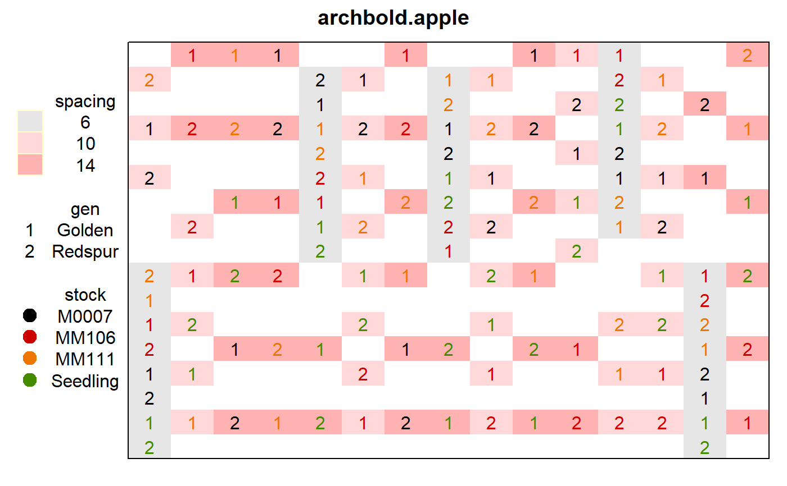

archbold.apple.RdSplit-split plot experiment of apple trees with different spacing, root stock, and cultivars.
A data frame with 120 observations on the following 10 variables.
repblock, 5 levels
rowrow
posposition within each row
spacingspacing between trees, 6,10,14 feet
stockrootstock, 4 levels
gengenotype, 2 levels
yieldyield total, kg/tree from 1975-1979
trttreatment code
In rep 1, the 10-foot-spacing main plot was split into two non-contiguous pieces. This also happened in rep 4. In the analysis of Cornelius and Archbold, they consider each row x within-row-spacing to be a distinct main plot. (Also true for the 14-foot row-spacing, even though the 14-foot spacing plots were contiguous.)
The treatment code is defined as 100 * spacing + 10 * stock + gen, where stock=0,1,6,7 for Seedling,MM111,MM106,M0007 and gen=1,2 for Redspur,Golden, respectively.
D Archbold and G. R. Brown and P. L. Cornelius. (1987). Rootstock and in-row spacing effects on growth and yield of spur-type delicious and Golden delicious apple. Journal of the American Society for Horticultural Science, 112, 219-222.
Cornelius, PL and Archbold, DD, 1989. Analysis of a split-split plot experiment with missing data using mixed model equations. Applications of Mixed Models in Agriculture and Related Disciplines. Pages 55-79.
# \dontrun{ library(agridat) data(archbold.apple) dat <- archbold.apple # Define main plot and subplot dat <- transform(dat, rep=factor(rep), spacing=factor(spacing), trt=factor(trt), mp = factor(paste(row,spacing,sep="")), sp = factor(paste(row,spacing,stock,sep=""))) # Due to 'spacing', the plots are different sizes, but the following layout # shows the relative position of the plots and treatments. Note that the # 'spacing' treatments are not contiguous in some reps. libs(desplot) desplot(dat, spacing~row*pos, col=stock, cex=1, num=gen, # aspect unknown main="archbold.apple")#>m1 <- lmer(yield ~ -1 + trt + (1|rep/mp/sp), dat) vc(m1) # Variances/means on Cornelius, page 59#> grp var1 var2 vcov sdcor #> sp:(mp:rep) (Intercept) <NA> 193.3 13.9 #> mp:rep (Intercept) <NA> 203.8 14.27 #> rep (Intercept) <NA> 197.3 14.05 #> Residual <NA> <NA> 1015 31.86## grp var1 var2 vcov sdcor ## sp:(mp:rep) (Intercept) <NA> 193.3 13.9 ## mp:rep (Intercept) <NA> 203.8 14.28 ## rep (Intercept) <NA> 197.3 14.05 ## Residual <NA> <NA> 1015 31.86 # }